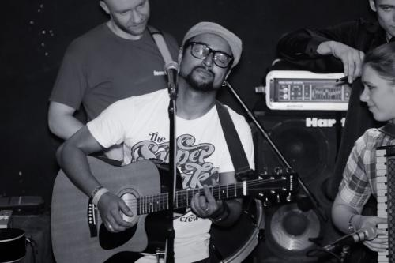
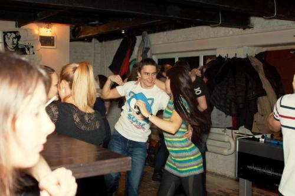
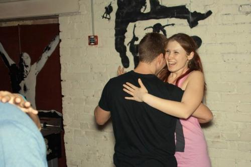
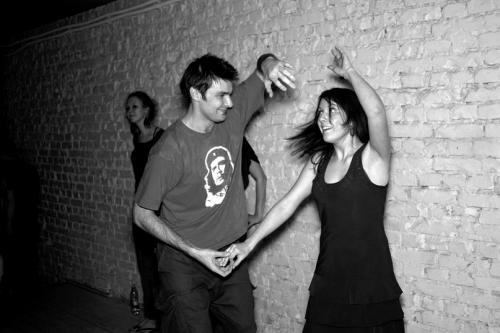

Питер. Версия Forro*. Только танцы и танцы
Знаете, когда дело касается танцев, все слова кажутся бесконечно убогими, но я попробую
(* — смотри сноски в конце)
Ерч пытается закрутить меня и сомнительно сплетает наши руки. Он был всего на двух занятиях, но тоже подорвался в Питер на семинар школы Forro ao Vivo**. Танцуем:
- Я всю неделю ходил на танцы: сальса, бачата всякая… но, знаешь, это не то. Форро лучше.
- Чем?
— Оно раздолбайское такое!
На самом деле, форро может быть простым, сложным, быстрым, медленным, можно танцевать близко, далеко, прокручиваясь часовым механизмом, или с закрытыми глазами, прижавшись друг к другу, слушая ритмы сердца…
Чересчур женским составом Forro da Alma*, в соотношении один к двум, разными поездами Мск-Спб мы променяли сон на вагон-ресторан, Свиблово на Купчино, подъезды на парадные (приютили нас ребята из школы Mundo Capoeira).
Пабло Диаз, улыбчивый как все бразильцы, танцевал запредельно. А мы в том же соотношении – две женщины на одного мужчину стоят в сторонке платочки в руках теребят – через песню топтались по углам, я даже попробовала вести за партнёра, плотно прижавшись к чужой женской груди. Стоять на полной стопе оказалось едва ли не лучше, чем быть партнёршей, хотя вести женщину я умею только в базовом шаге.
После мастер-класса – четырех часов приятной круговерти, – наши ребята неожиданно ушли спать, а мы с Ерчем – по кофе и на Лиговский, в подворотню …сколько же тут клубов! Но нам нужен был именно Dushe.
Местечко в духе «хард и металл» с большими барменами в татуировках, которым „вся эта бразильская музыка как серпом по яйцам“. На сцене происходило прям народное творчество: барабан на ремне через плечо, женщина с аккордеоном в клетчатой рубашке, утонченная скрипка, поющая гитара, треугольник один на двоих и Танюша с Юлей на подпевках. Очаровательное зрелище, называются они: Nao Prohibidos ** (!)
И все танцевали… ну почти все. Мы же такие гордые, московские, никого не приглашаем, только бесполезно грозимся напиться и опять заказываем сок со льдом. Зато Ерч был доволен: юбки-юбки-платья, развеваются, покачиваются – это просто праздник какой-то!!
На воскресной вечеринке в «Доске» я уже попустилась, и все приглашали всех. Но вдруг правая нога сказала «привет» резкой болью в подъёме при каждом повороте, а танцевать так хочется! В итоге, стою я печальная в сигаретном дыму у барной стойки, и меня, конечно, приглашают.
Я: только у меня нога болит
Он: ходи как тебе удобно, шочи* – оно же внутри, главное, что здесь, – он указал на сердце, и мы начали танцевать. Это был отличный урок.
Форро длилось, пока не пришло время бежать на вокзал.
Спасибо за теплые форро-выходные и гостеприимство!
Moito obrigado Forro ao Vivo e Pablo Diaz!!
**
душевный такой Ерч
Nao Prohibidos & Pablo Diaz, концерт в «Dushe»

танцевальный Орехов с Леной

Маша, преподаватель школы форро в Москве

..забыла про больную ногу:

*про форро (порт. forro) — http://ru.wikipedia.org/wiki/Forro
** Forro ao Vivo – школа форро в Санкт-Петербурге
* Forro da Alma – школа форро в Москве
**Не запрещенные
***Шочи (порт. xote) – базовый стиль, танцуется в закрытой поддержке, без поворотов и вариаций
**** все фото украдены у Алексея Белоусова, Спб